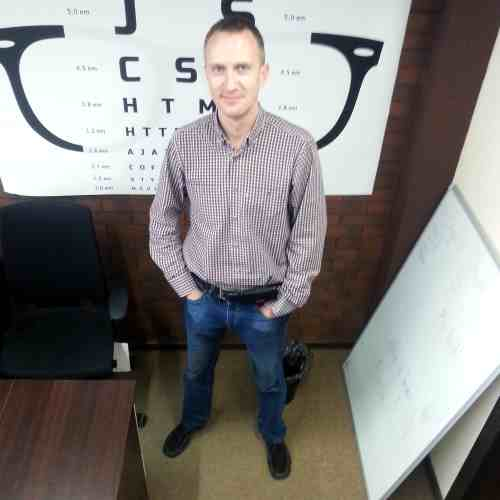
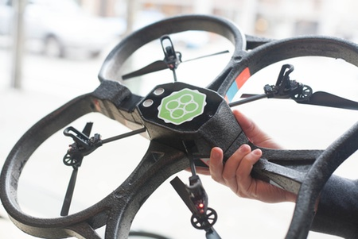

Афиша
-

19:00
Железо, как хобби: от светодиода до "умного" дома
Андрей Ворошков
Рассказ о том, что занятные девайсы в наше время вполне можно делать самостоятельно, обладая даже небольшими познаниями в электронике и программировании.
-
20:00
Кофе пауза
-

20:20
Программирование Parrot AR Drone на JS
Дмитрий Герасимов и Кирилл Демура
Парни покажут и расскажут о программировании квадрокоптера Parrot AR Drone.
-

21:00
Пускаем Квадрокоптеры! :)
На данный момент у нас есть пара Parrot AR Drone 2.0, пара самодельных коптеров и пара Cheerson CX-10. У кого есть свой, приносите!
Место проведения
IMAGURU бизнес-клуб | стартап-хаб
Минск, ул. Фабрициуса, 4 (ст.м. Институт Культуры)
Мы ищем докладчиков
Мы всегда рады сотрудничеству.
Если у вас есть какие-либо предложения или просто желание выступить и
поделиться своим опытом, то, пожалуйста, напишите
нам rolling.scopes@gmail.com